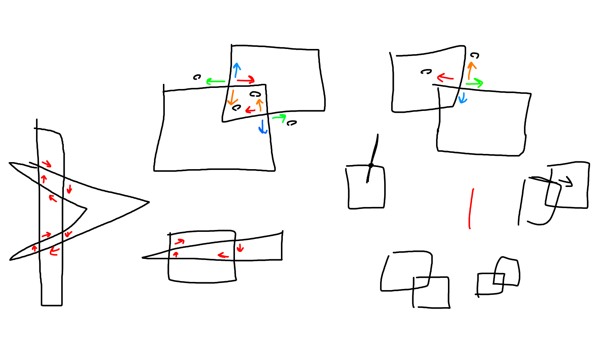
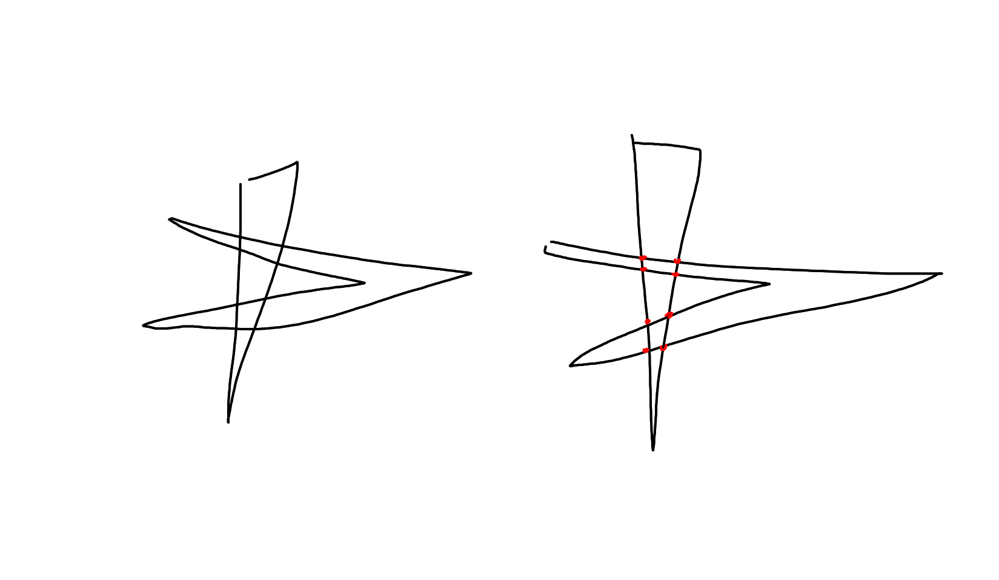
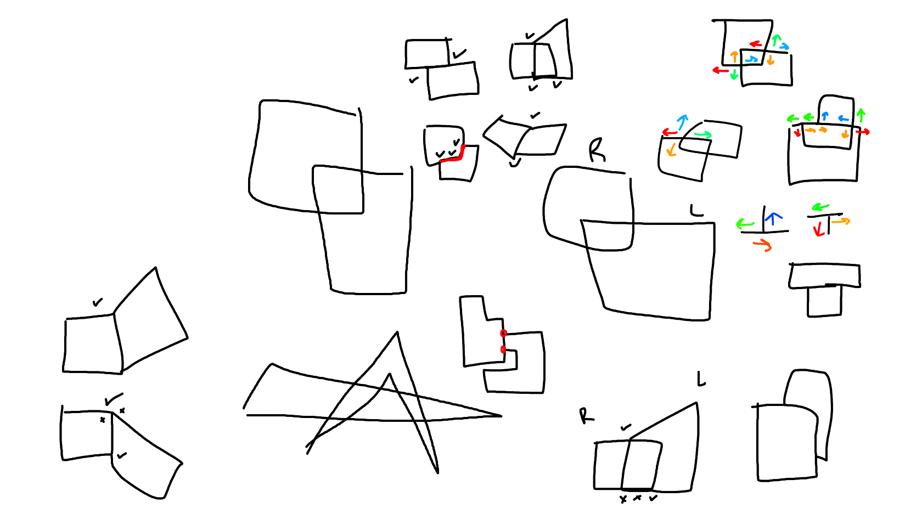
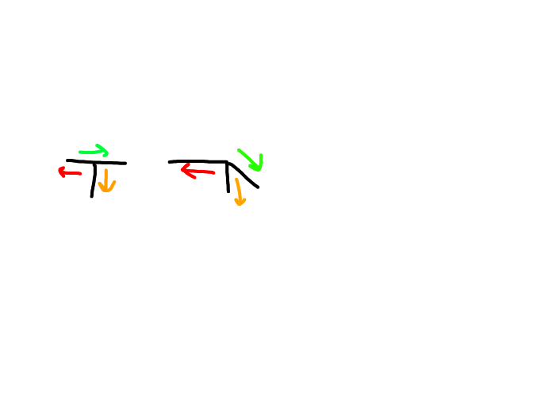
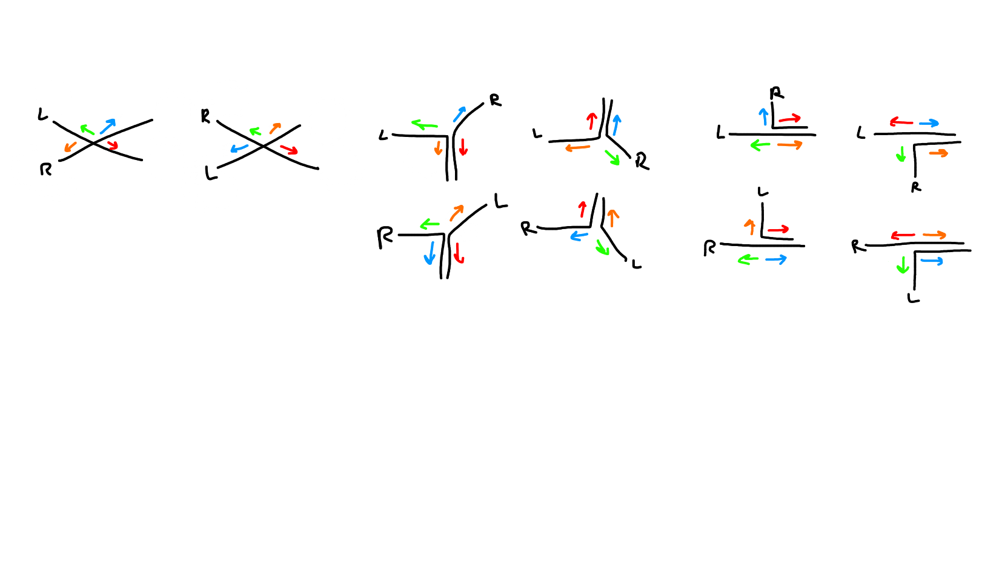

Layout Designer
HomeUpdated on February 6, 2024.
I started the layout designer in 2020 during the pandemic. It began because, at the time, I would play online escape games with my high school friends. I became obsessed with the idea of these escape games having encounters and environments which are randomly generated.
Two years after graduating, in 2022, I decided to revisit it.
Initially the big idea for this algorithm involved taking a simple cube and splitting it in half, then repeatedly doing this and generating walls at the end. Above shows the result: hundreds upon hundreds of randomly generated room layouts.
I realized the idea had potential, but I also realized that it could only work with squares and sharp angles. So I decided to make it more applicable.
A couple of months later I reapproached the idea with a Cut subalgorithm, which takes in a shape and an arbitrary green line and slices the shape into corresponding pieces.
Then those said pieces could be built into walkable spaces.
What was great about this version was that it allowed for angled cuts. This added infinitely more variety to the kinds of shapes and spaces that I could generate. I was able to get cuts from really irregular shapes which was impossible before.
Occasionally there would be a glitch and the cut would fail due to issues with numeric stablity. So I implemented a cut renderer to scan for any irregular results or clipping issues. As I worked on it, I got the algorithm to have a near-flawless success rate. Above shows a video of the revised algorithm at work, each frame being a new cut, with no glitches.
Here's another video, but with each frame having multiple cuts.
Behind the scenes, I did a lot of brainstorming to see how I could find a way to generate spaces with intention. For example, instead of walking around an arbitrary polygon, how could I make the space look and feel more functional?
After a lot of revising and reapproaching throughout the years, I redesigned the entite system from the ground up based around a widely known concept: a Venn diagram.
Intersection, negation, and union happen when you overlap two shapes much like a Venn diagram. Think of union as the combined two shapes, intersection as the area included by the two shapes, and negation as one shape clipped by the other shape.
It took lots of drawing and testing to wrap my head around this.
    Eventually, I got it right, however.
And so here it is: The finished result of the Venn subalgorithm, which takes two shapes and calculates all four (intersection, union, left negation, and right negation) from an overlap.
This algorithm became the building block for a really ambitious system I started very recently, which was a schematics system that uses this algorithm to construct new areas from scratch.
As of February 2023, I've developed a node based editor to edit generated layouts and change things such as wall heights and thicknesses as well as expansions off of existing spaces.
Continuing this algorithm will mean finishing this node-based editor and to turn the product into something more readable.